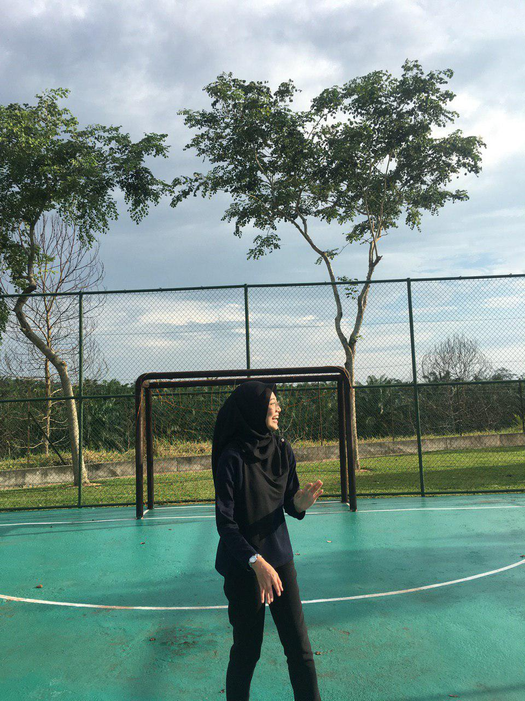
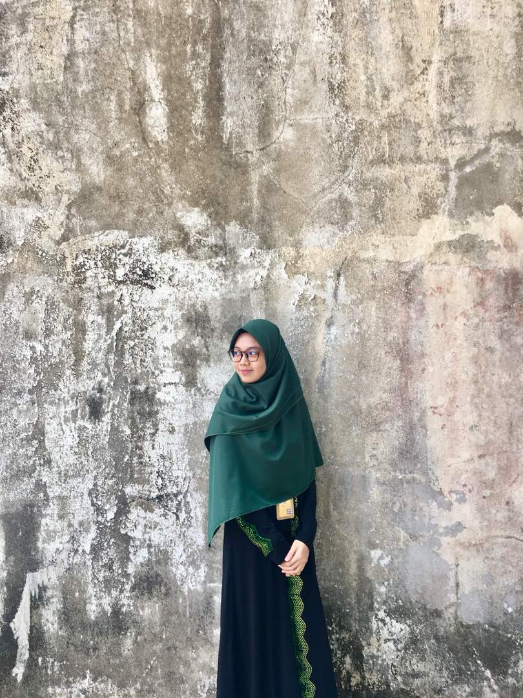
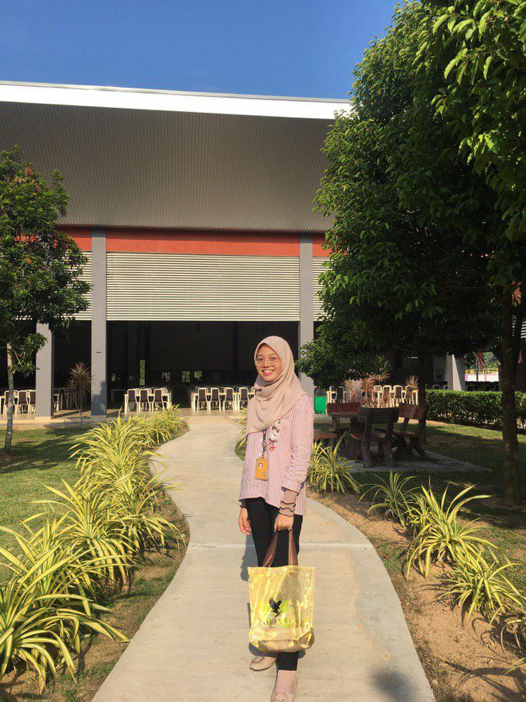
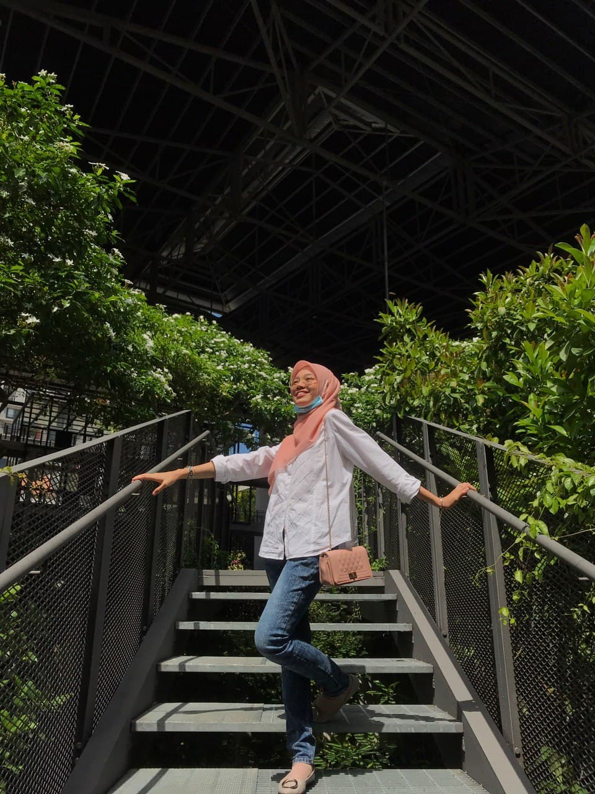
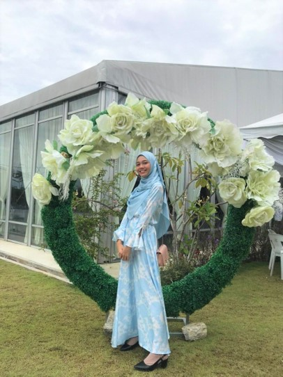

"Art and life really are the same, and both can only be about a spiritual journey, a path towards a re-union with a supreme creator, with god, with the divine; and this is true no matter how unlikely, how strange, how unorthodox, one’s particular life path might appear to one’s self or others at any given moment."
|  |  |  |  |  |
|---|
Hye my name is Noor Amirah Amanina binti Noor Ariffin
Currently i'm living in Kuarters Pengarah Institut Latihan Perindustrian Pedas, Lot 3289, Jln Pedas Linggi, 71400 Pedas, Negeri Sembilan
I was born at Hospital Sultanah Aminah, Johor Bahru | 14 July 1999
I also a student of Bachelor in Office System Management (BA232) at UiTM Machang, Kelantan
Drawing and cooking is my passion but if only my mood turns to good
Part time being 'kakak' of 3 cats even they are fat and lazy but kakak love you all!